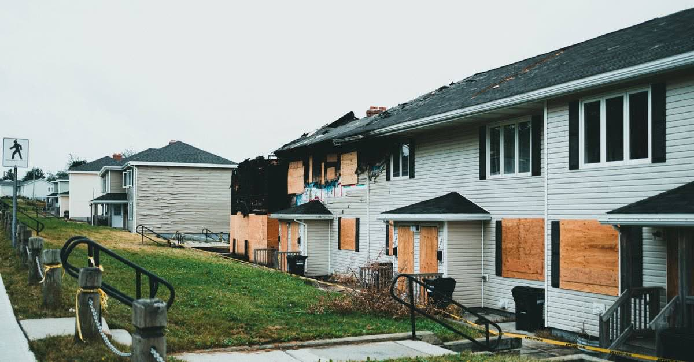

DASK hasar ihbarı nasıl yapılır? 15 günlük süre, %2 muafiyet ve 72 saat kuralı
Depremden sonra DASK hasar ihbarı için süre 15 gün. İhbar kanalları, eksper süreci, %2 muafiyet ve ödemenin nasıl hesaplandığı.

15 gün — depremi (rizikoyu) öğrendiğiniz tarihten itibaren. Sigorta tazminatında zamanaşımı ise iki yıldır.
Zorunlu deprem sigortanız varsa depremden sonraki ilk hukuki adımınız hasar ihbarıdır. Bu adım basit görünür ama üç noktada hak kaybına yol açar: süresini kaçırmak, ihbarın kaydını tutmamak ve ödemenin nasıl hesaplandığını bilmemek.
İhbar süresi: 15 gün
Zorunlu Deprem Sigortası Genel Şartlarına göre hasar ihbarı, rizikoyu öğrendiğiniz tarihten itibaren 15 gün içinde yapılır.
Bu süre, hasarın büyüklüğünü öğrenmenizi beklemez. Binaya giremiyor olsanız, şehir dışındaysanız veya hasarın boyutu belirsizse bile ihbarı yapın; detaylar sonradan tamamlanır.
İhbar kanalları
- ALO DASK 125 — telefonla, en hızlısı.
- DASK internet sitesi — online hasar işlemleri.
- Poliçenizi düzenleyen sigorta şirketi.
- e-Devlet üzerinden ilgili başvuru adımı.
Kayıt tutun
Hangi kanaldan ihbar ettiyseniz hasar dosya numarasını not edin; telefonla ihbar ettiyseniz görüşme tarihini ve saatini yazın. Sonraki her itirazda bu numara istenir.
İhbardan ödemeye: süreç nasıl işliyor?
- İhbar — dosya açılır, numara verilir.
- Eksper incelemesi — hasar tespit görevlileri veya sigorta eksperleri yerinde inceleme yapar, rapor düzenlenir.
- Dosyanın değerlendirilmesi — teminat kapsamı, sigorta bedeli ve muafiyet uygulanarak tazminat hesaplanır.
- Ödeme — belgelerin tamamlanmasından sonra ödeme yapılır. Ödeme gecikirse temerrüt faizi talep edilebilir.
Eksper geldiğinde yanında olun, gördüğü ve görmediği yerleri kayda alın. Rapor, ödemenin tek belirleyicisidir ve itiraz edilebilir.
Ödeme neden beklediğinizden az çıkıyor? %2 muafiyet
DASK, hasarın tamamını değil, muafiyeti aşan kısmını öder. Her hasarda sigorta bedelinin %2'si oranında tenzili muafiyet uygulanır.
Sigorta bedeli, yapı tarzına göre belirlenen metrekare birim bedelinin binanın brüt yüzölçümüyle çarpılmasıyla bulunur. 01.05.2026 tarifesine göre çelik/betonarme karkas yapılarda metrekare bedeli 10.714 TL, diğer yapılarda 7.142 TL olarak geçmektedir.
| Kalem | Tutar |
|---|---|
| 100 m² betonarme konut, sigorta bedeli | 1.071.400 TL |
| %2 tenzili muafiyet | 21.428 TL |
| 60.000 TL'lik hasarda ödenecek | 38.572 TL (hasar − muafiyet) |
| 15.000 TL'lik hasarda ödenecek | 0 TL |
Parasal değerler eskir. DASK metrekare bedelleri ve azami teminat tutarı yıl içinde birden fazla kez güncelleniyor. Yukarıdaki rakamlar 01.05.2026 tarihli tarifeye göre üretilmiştir; güncel hesap için sigorta açığı aracını kullanın — araç hangi tarihli tarifeyle hesap yaptığını size gösterir.
72 saat kuralı: nadiren anlatılan ve lehinize olan kural
Muafiyet uygulaması bakımından her bir 72 saatlik dönem bir hasar sayılır. Bu teknik cümlenin pratik anlamı büyüktür.
6 Şubat 2023'te olduğu gibi kısa aralıklarla iki büyük deprem meydana geldiğinde, ikisi tek hasar kabul edilir ve muafiyet bir kez düşülür. Ayrı hasarlar sayılsaydı muafiyet iki kez uygulanacak, ödeme daha da azalacaktı.
DASK'ın ödemediği kalemler
Ödeme hesabında hayal kırıklığının asıl kaynağı çoğu zaman muafiyet değil, teminat kapsamıdır. DASK yalnızca binayı sigortalar.
- Ev eşyası, beyaz eşya, elektronik — kapsam dışı.
- Enkaz kaldırma masrafları — kapsam dışı.
- Kira mahrumiyeti ve alternatif konaklama — kapsam dışı.
- Ölüm dâhil tüm bedeni zararlar ve manevi tazminat — kapsam dışı.
Tam liste ve nedenleri: DASK neleri karşılamaz?
Ödemeye ve rapora itiraz yolları
| Basamak | Nereye | Süre |
|---|---|---|
| Eksper raporuna itiraz | Sigorta şirketi | 15 gün |
| İkinci eksper talebi | Sigorta şirketi | — |
| Hasar dosyasına itiraz | DASK Genel Müdürlüğü | 30 gün |
| Yazılı başvuru (dava şartı) | Sigorta şirketi | — |
| Tahkim veya mahkeme | Sigorta Tahkim Komisyonu / mahkeme | 2 yıl zamanaşımı |
Sıralama önemlidir: Sigorta Tahkim Komisyonuna ya da mahkemeye gitmeden önce sigorta şirketine yazılı başvuru yapmak dava şartıdır. Bu adım atlanırsa dosya usulden reddedilir — ayrıntısı burada.
Zamanaşımı: iki yıl
Sigorta sözleşmesinden doğan istemler, alacağın muaccel olduğu tarihten itibaren iki yıl geçmekle zamanaşımına uğrar. Tazminat ve sigorta bedeline ilişkin istemler her hâlde rizikonun gerçekleşmesinden itibaren altı yılda zamanaşımına uğrar.
Sigortacıya yapılan yazılı başvurunun, cevap verilinceye kadar zamanaşımını durdurduğu kabul edilir. Yine de başvuru tarihlerinizi süre takviminize işleyin.
Poliçeniz yoksa ya da geçersizse
DASK poliçesi bina ve malik üzerinedir; kiracı kendi adına DASK yaptıramaz. Ayrıca bazı binalar genel şartlar gereği kapsam dışıdır: tamamı ticari veya sınai amaçla kullanılan binalar, projesi bulunmayan ve mühendislik hizmeti görmemiş yapılar, taşıyıcı sistemi olumsuz etkileyecek şekilde tadil edilmiş binalar, yıkılmasına karar verilen ya da metruk yapılar.
Poliçesi olmayanlar için asıl kayıp cezai yaptırım değildir: zorunlu deprem sigortası bulunmayanlara devlet konut yardımı veya kredi ödenmediği belirtilmektedir.
Kanuni dayanak
| Mevzuat | Ne diyor |
|---|---|
| ZDS Genel Şartları B.1 | Rizikonun gerçekleştiğinin öğrenildiği tarihten itibaren onbeş gün içinde ihbar yükümlülüğü. |
| ZDS Genel Şartları A.3 | Teminat dışında kalan hâller: eşya, enkaz kaldırma, kira mahrumiyeti ve bedeni zararlar. |
| 6305 sayılı Afet Sigortaları Kanunu | Zorunlu deprem sigortasını ve Doğal Afet Sigortaları Kurumunu düzenler. |
| TTK m.1420 | Sigorta tazminatı alacakları iki yıllık zamanaşımına tabidir. |
Sık sorulanlar
DASK hasar ihbarı kaç gün içinde yapılmalı?
Zorunlu Deprem Sigortası Genel Şartlarına göre hasar ihbarı, rizikoyu öğrendiğiniz tarihten itibaren 15 gün içinde yapılır. Geciken ihbar tazminatı riske atabileceği için beklememek gerekir.
DASK hasar ihbarı nereden yapılır?
ALO DASK 125 telefon hattından, DASK internet sitesindeki online hasar işlemlerinden, poliçenizi düzenleyen sigorta şirketinden veya e-Devlet üzerinden yapılabilir.
DASK muafiyeti nedir, ne kadardır?
Her hasarda sigorta bedelinin yüzde ikisi oranında tenzili muafiyet uygulanır. DASK, hasarın bu tutarı aşan kısmından sorumludur. Örneğin sigorta bedeli 1.071.400 TL olan bir konutta muafiyet 21.428 TL'dir.
72 saat kuralı ne işe yarar?
Muafiyet uygulaması bakımından her 72 saatlik dönem tek bir hasar sayılır. Bu kural sigortalının lehinedir: kısa aralıklarla iki büyük deprem olduğunda muafiyet iki kez değil, bir kez düşülür.
DASK ödemesini az bulursam ne yapabilirim?
Eksper raporuna tebliğden itibaren 15 gün içinde yazılı itiraz edebilir, ikinci eksper talep edebilirsiniz. Hasar dosyanız kapatıldıysa DASK Genel Müdürlüğüne 30 gün içinde yazılı itiraz edilebilir.
15 günlük süreyi kaçırırsam tazminat alamaz mıyım?
İhbarın geç yapılması, kural olarak tazminat hakkını kendiliğinden ortadan kaldırmaz; ancak gecikme zararın belirlenmesini güçleştirdiyse sigortacı bu ölçüde indirim yapabilir. Geciktiyseniz de derhal ihbar edin ve gecikme nedenini yazılı olarak belirtin.
İhbarı kim yapabilir?
Sigorta ettiren veya sigortalı; uygulamada malik ya da yetkilendirdiği kişi. Kiracı, poliçenin tarafı olmadığı için kendi adına tazminat talep edemez.
Bu konuyla ilgili araç
Teminat açığı hesabıMuafiyeti ve açıkta kalan tutarı kendi binanız için hesaplayın.Süre takvimiİhbar ve itiraz sürelerinizi takvime dökün.İlgili rehberler
 Konut ve sigorta
DASK neyi karşılar, neyi karşılamaz?
DASK binanızı sigortalar, hayatınızı değil. Ev eşyası, enkaz kaldırma, alternatif konaklama, kira kaybı ve ölüm dâhil bedeni zararlar kapsam dışıdır.
Konut ve sigorta
DASK neyi karşılar, neyi karşılamaz?
DASK binanızı sigortalar, hayatınızı değil. Ev eşyası, enkaz kaldırma, alternatif konaklama, kira kaybı ve ölüm dâhil bedeni zararlar kapsam dışıdır.
 Konut ve sigorta
Eksper raporu son söz değildir: itiraz, ikinci eksper ve hakem eksper
Sigorta ödemesini az bulanların çoğu doğrudan mahkemeyi düşünüyor. Arada çok daha hızlı üç basamak var: itiraz, ikinci eksper, hakem eksper.
Konut ve sigorta
DASK'ım yeterli mi? Sigorta bedeli, azami teminat ve eksik sigorta tuzağı
DASK'ın ödeyeceği tutar konutunuzun piyasa değeri değildir. Bedel metrekareyle hesaplanır, azami teminatla sınırlıdır ve muafiyet düşülür.
Konut ve sigorta
Eksper raporu son söz değildir: itiraz, ikinci eksper ve hakem eksper
Sigorta ödemesini az bulanların çoğu doğrudan mahkemeyi düşünüyor. Arada çok daha hızlı üç basamak var: itiraz, ikinci eksper, hakem eksper.
Konut ve sigorta
DASK'ım yeterli mi? Sigorta bedeli, azami teminat ve eksik sigorta tuzağı
DASK'ın ödeyeceği tutar konutunuzun piyasa değeri değildir. Bedel metrekareyle hesaplanır, azami teminatla sınırlıdır ve muafiyet düşülür.
 Dava ve uyuşmazlık
Sigortayla uyuşmazlık: önce yazılı başvuru, sonra Tahkim mi mahkeme mi?
Sigorta şirketine yazılı başvuru yapmadan Tahkim'e veya mahkemeye gidilemez; bu bir dava şartıdır. Yol seçimi ise geri dönüşsüzdür.
Dava ve uyuşmazlık
Sigortayla uyuşmazlık: önce yazılı başvuru, sonra Tahkim mi mahkeme mi?
Sigorta şirketine yazılı başvuru yapmadan Tahkim'e veya mahkemeye gidilemez; bu bir dava şartıdır. Yol seçimi ise geri dönüşsüzdür.
 Hasar tespiti ve itiraz
Depremden sonra ilk 30 gün: hangi hakkın süresi ne zaman doluyor?
Deprem sonrasında kaybedilen hakların çoğu bilinmediği için değil, süresi kaçtığı için kaybediliyor. İşte gün gün yapılması gerekenler.
Hasar tespiti ve itiraz
Depremden sonra ilk 30 gün: hangi hakkın süresi ne zaman doluyor?
Deprem sonrasında kaybedilen hakların çoğu bilinmediği için değil, süresi kaçtığı için kaybediliyor. İşte gün gün yapılması gerekenler.